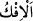
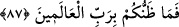
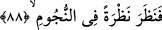
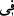
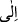
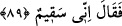
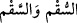

86. «Allah’tan başka bir takım uydurma ilâhlar mı istiyorsunuz?»
İftira demek olan “
”, yalanın en kötüsüdür. Yani iftira için Allah’tan başka ilahlar
mı istiyorsunuz? Burada mef’ul fiil üzerine, mef’ul-i bih mef’ul-i leh üzerine takdim
edilmiştir. Çünkü burada önemli olan onların iftiraları ve bâtıl şirkleriyle yüzleşmektir.
87. «O halde âlemlerin Rabbi hakkındaki görüşünüz nedir?»
“O halde” Allah’tan başkasına ibadet ettiğinize göre Allah’a kavuştuğunuz zaman
“âlemlerin Rabbi hakkındaki görüşünüz nedir?” Sizden gafil mi olacak yahut yapıp
ettiklerinizden dolayı sizi cezalandırmayacak mı? Sizin bu konuda zannınız bile yoktur;
kesin bilginiz nereden olacak? Keşfü’l-esrâr’da der ki: İbrâhim (a.s.)’ın gönlünde
onları delil ile ilzâm etmek ve onlara putların mâbudluğa lâyık olmadığını açıkça
göstermek için putlarına bir hile yapmak vardı. Bir gün babası ve dostları ona “İbrâhim
gel; dışarıya, bizim bayram yerimize gidelim” dediler.
88. Bunun üzerine İbrahim yıldızlara şöyle bir baktı.
“Bunun üzerine İbrahim yıldızlara şöyle bir baktı.” Yani yıldız ilmine ve yıldızların
hesabına baktı. Yoksa doğrudan yıldızlara değil. Çünkü doğrudan yıldızların kendisine
bakmış olsaydı “ ” harf-i cerri yerine “ ” harf-i cerrini kullanırdı. Zira o dönemde
toplum yıldız ilmi ile ilgileniyor ve ona itibar ediyordu. Tepki almamak için onların
içinde bulundukları hal ile onlara muamele etti. Onların bayramlarına ve onlarla
beraber mâbetlerine çıkmamak için de hastalığını gerekçe gösterdi ve:
89. Ben hastayım, dedi.
el-Müfredât’ta der ki: “
” yalnız bedeni hastalıktır. Hastalık bazen bedende
bazen de nefis ve ruhta olur. “Ben hastayım” sözü târiz ve îmâlı bir sözdür. Bu söz ya
maziye yahut müstakbele işaret etmektedir. Yani bu söz “Ben şu an hastayım, yahut hasta
olacağım” demektir. Yahut o an az da olsa mevcut olan hastalık belirtilerine işaret
edilmektedir. Zira insan kendisi hissetmese bile kendisine ârız olan bir takım hastalık
emarelerinden uzak değildir. Korku endişe ve tehlike bulunan yere de hasta, sakat yer